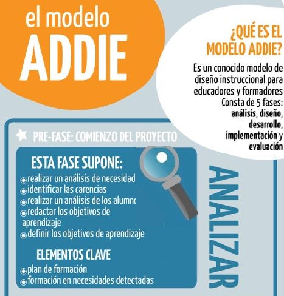
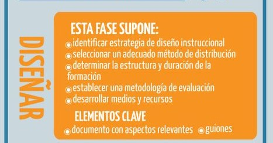
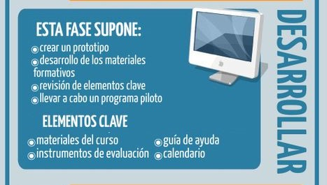
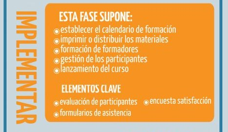
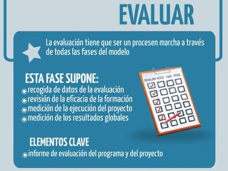

ANTECEDENTES
El DISEÑO INSTRUCCIONAL es el proceso a través del cual se crea un ambiente virtual, así como los materiales necesarios para promover un aprendizaje significativo, atractivo y eficaz para los estudiantes. Es una guía que parte del diagnóstico de las necesidades y que permite la planificación del aprendizaje y del enfoque que se le dará a través del diseño e implementación de las actividades.
Un diseño instruccional adecuado permitirá seleccionar las herramientas o alternativas más apropiadas para adaptar el contenido a las necesidades de aprendizaje requeridas según el contexto. Este diseño debe dar énfasis a establecer materiales estructurados que sean autónomos y aptos para ser utilizados múltiples veces sin requerir ajustes continuamente.
Uno de los modelos más utilizados para el diseño de ambientes e-learning es el Modelo ADDIE (Analizar, Diseñar, Desarrollar, Implementar, Evaluar).
FASE 1

FASE 2

FASE 3

FASE 4

FASE 5
